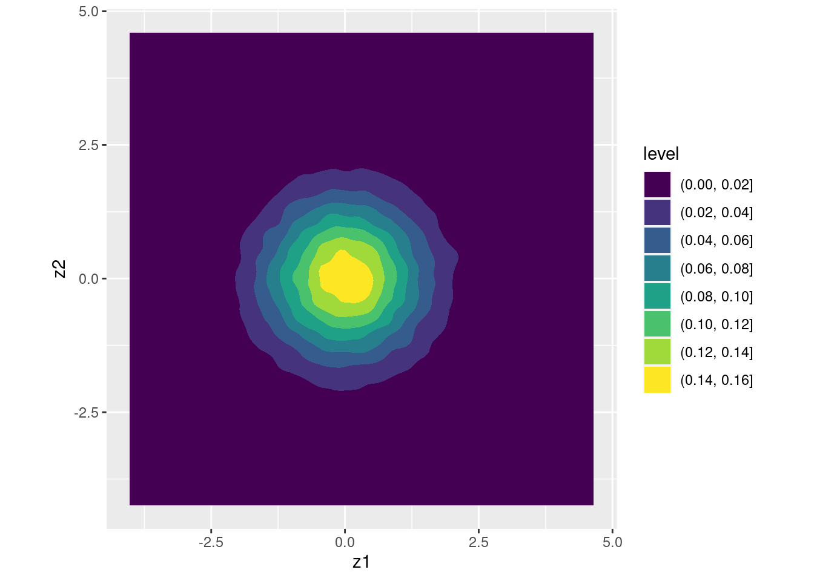

Lesson 6 The Normal Distribution
If you hear a "prominent" economist using the word "equilibrium," or "normal distribution," do not argue with him; just ignore him, or try to put a rat down his shirt.
-- Nassim Nicholas Taleb

The standard normal distribution.
Taleb's exhortation notwithstanding, this lesson is all about the normal distribution! While its importance as a description of naturally-occurring data has probably been overstated, the normal distribution still plays a central role in econometrics and statistics. This isn't because data follow a normal distribution; it's because sampling distributions of estimators tend to, at least in large samples. The normal distribution is also important in model-building because we can use it as an ingredient to construct relatively simple models of complicated phenomena.
From your introductory coursework in statistics and econometrics you're probably familiar with the one-dimensional normal distribution. This lesson will build on the intuition you already have in the one-dimensional case to help you gain a deeper understanding of the multivariate normal distribution. There's a good chance that you've seen some of this material before. But from past experience, many students are a bit fuzzy on the details.
We'll start by reviewing the key commands for working with normal distributions in R: d/p/q/rnorm(). These will come up again and again in future lessons. Then we'll take up the challenge of simulating correlated normal draws. Along the way we'll learn how to calculate column means, variance-covariance matrices, and correlation matrices with the commands colMeans(), cov(), cor() and cov2cor(). We'll also learn to make kernel density plots using the ggplot commands geom_density() and geom_density2d_filled(). Our destination in this lecture is the Cholesky Decomposition, an important result from matrix algebra that's extremely helpful for understanding multivariate normal distributions. We'll work up to this result in easy steps, introducing some basic R commands for matrix algebra as we go, including %*%, t(), and chol(). At the very end, once you know how to generate correlated normals from scratch, I'll relent and allow you to use the extremely helpful command rmvnorm() from the mvtnorm package instead. An appendix to this lesson makes the case for why doing things "the hard way" before you allow yourself to use a canned function like rmvnorm() is worth the trouble.
6.1 Standard Normals as Building Blocks

Escher's "Relativity" in Lego by Andrew Lipson
What's the definition of a \(\text{N}(\mu, \sigma^2)\) random variable? You might be tempted to write down a probability density function, but I have a better idea: let's pass the buck! The \(\text{N}(\mu, \sigma^2)\) distribution is what you end up with if you shift and scale a standard normal. In particular: we say that \(X \sim \text{N}(\mu, \sigma^2)\) if \(X = \mu + \sigma Z\) for some constants \(\mu\) and \(\sigma > 0\), where \(Z\) is a standard normal random variable. From this perspective, any properties of normal distributions in general follow from properties of the standard normal distribution in particular. Because the standard normal distribution is fairly simple, this turns out to be a very convenient approach.
One-dimensional normal distributions can only take us so far. In many important applications we need to work with two or more correlated normal random variables. For example, to run a simulation study exploring the properties of the instrumental variables estimator we need a way of creating correlated "first stage" and "second stage" errors. Fortunately we can use the same basic approach as above to build up a multivariate normal random vector \(\mathbf{X}\). We start with a vector of independent standard normals, scale them with a matrix of constants and shift them with a vector of yet more constants. In other words: \(\mathbf{X} = \boldsymbol{\mu} + \mathbf{A}\mathbf{Z}\). If this looks forbidding, don't worry; we'll build up the intuition step-by-step in this lesson. For the moment, simply take my word for it: the multivariate normal distribution becomes much less formidable once you break it down into its constituent independent standard normals.
6.2 The One-Dimensional Case
We'll start a quick review of the one-dimensional case. After introducing the key R functions for normal distributions, I'll turn you loose on some simple exercises.
6.2.1 pnorm()
The R function for the cumulative distribution function (CDF) of a standard normal is pnorm(). In other words, \(\mathbb{P}(Z\leq z) = \texttt{pnorm}(z)\) for \(Z\sim \text{N}(0,1)\). So what about the CDF of \(X \sim \text{N}(0, \sigma^2)\)? Since \((X - \mu) / \sigma \sim \text{N}(0,1)\), we have
\[
\mathbb{P}(X\leq x) = \mathbb{P}\left( \frac{X - \mu}{\sigma} \leq \frac{x - \mu}{\sigma} \right) = \texttt{pnorm}\left(\frac{x - \mu}{\sigma}\right).
\]
This shows that we don't actually need a separate function for general normal distributions: we can do everything with pnorm() after subtracting the mean (centering) and dividing by the standard deviation (standardizing). For convenience, R allows us to supply a mean and standard deviation sd to pnorm() to obtain the CDF of an arbitrary normal random variable. This gives exactly the same result as centering and standardizing:
pnorm(1, mean = 2, sd = 3)## [1] 0.3694413pnorm((1 - 2) / 3)## [1] 0.36944136.2.2 dnorm()
The R function for the probability density function of a standard normal is dnorm(). The function dnorm() is the derivative of the function pnorm(). As with pnorm(), R allows us to supply a mean and standard deviation sd to obtain the density of a \(\text{N}(\mu, \sigma^2)\) random variable, but this is only for convenience since
\[
\frac{d}{dx} \mathbb{P}(X\leq x) = \frac{d}{dx} \text{pnorm} \left(\frac{x - \mu}{\sigma}\right) = \frac{1}{\sigma}\texttt{dnorm}\left(\frac{x - \mu}{\sigma}\right).
\]
Accordingly, both of these give the same answer, although the first is easier to read:
dnorm(1, mean = 2, sd = 3)## [1] 0.1257944dnorm((1 - 2) / 3) / 3## [1] 0.12579446.2.3 qnorm()
The R function for the quantile function of a standard normal distribution is qnorm(). This is the inverse of the function pnorm(). jWhereas pnorm(z) returns the probability that \(Z \sim \text{N}(0,1)\) takes on a value no greater than z, pnorm(p) returns the value of z such that \(\mathbb{P}(Z \leq z) = p\). This means that qnorm(pnorm(z)) equals z and pnorm(qnorm(p)) equals p. For example:
qnorm(pnorm(2))## [1] 2pnorm(qnorm(0.3))## [1] 0.3Like dnorm() and pnorm(), qnorm() allows us to specify a mean and standard deviation sd to obtain quantiles of an arbitrary normal random variable. But again, this is merely for convenience. Since \(\mathbb{P}(X \leq x) = \texttt{pnorm}\big((x - \mu)/\sigma\big)\),
\[
\begin{aligned}
\mathbb{P}(X \leq x) &= p\\
\texttt{qnorm}\left( \mathbb{P}(X \leq x) \right) &= \texttt{qnorm}(p)\\
\texttt{qnorm}\left( \texttt{pnorm}\left(\frac{x - \mu}{\sigma} \right) \right) &= \texttt{qnorm}(p)\\
\frac{x - \mu}{\sigma} &= \texttt{qnorm}(p)\\
x &= \mu + \sigma \times \texttt{qnorm}(p)
\end{aligned}
\]
In words: the \(p\)th quantile of a \(\text{N}(\mu, \sigma^2)\) RV equals \(\mu\) plus \(\sigma\) times the \(p\)th quantile of a standard normal. For example:
qnorm(0.75, mean = 2, sd = 3)## [1] 4.0234692 + 3 * qnorm(0.75)## [1] 4.0234696.2.4 rnorm()
The R function for making simulated standard normal draws is rnorm(). For example, we can make ten standard normal draws as follows
set.seed(1066)
rnorm(10)## [1] -0.5917632 0.2926060 -0.9212630 0.2399853 0.9197199 -0.7864827
## [7] 2.8104984 -0.9771701 1.7462778 0.1523001To obtain draws from a general normal distribution we can set the optional arguments mean and sd as above. But as above, this is only for convenience. Remember that we defined a \(\text{N}(\mu, \sigma^2)\) as what you get by shifting and scaling a standard normal. This means that shifting and scaling standard normal simulation draws is the same thing as simulating a \(\mathbf{N}(\mu, \sigma^2)\) random variable, for example:
set.seed(1066)
x <- rnorm(10, mean = 2, sd = 3)
set.seed(1066)
y <- 2 + 3 * rnorm(10)
all.equal(x, y)## [1] TRUE6.2.5 p/q/d/rnorm() are Vectorized
R accepts a vector as first argument to pnorm(), dnorm(), and qnorm(). This is very handy in practice, since it allows us to calculate the normal CDF/density/quantile function at many points in a single command. For example,
dnorm(c(-1.96, -1, 0, 1, 1.96))## [1] 0.05844094 0.24197072 0.39894228 0.24197072 0.05844094pnorm(c(-1.96, -1, 0, 1, 1.96))## [1] 0.0249979 0.1586553 0.5000000 0.8413447 0.9750021qnorm(c(0.025, 0.16, 0.5, 0.84, 0.975))## [1] -1.9599640 -0.9944579 0.0000000 0.9944579 1.9599640The function rnorm() is a bit different. Its first argument is the number of normal simulation draws we wish to make. When we pass it a vector as its first argument, rnorm() calculates the length of the vector and returns an equivalent number of normal draws:
rnorm(5)## [1] -0.56094004 0.27176376 0.47237903 0.62703516 0.01277877rnorm(c(-1, 0, 1))## [1] 0.01787882 0.31304030 -1.27600303All four of the p/q/d/rnorm() functions accept a vector for their mean and sd arguments. This too can be handy in practice. We can use it, for example, to make normal draws with different means
rnorm(2, mean = c(-100, 100), sd = 5)## [1] -102.7192 104.0509different variances
rnorm(2, mean = 0, sd = c(1, 100))## [1] 0.6451931 -110.0389461or both
rnorm(2, mean = c(-10, 10), sd = c(0.01, 1))## [1] -9.995741 9.9837586.2.6 Be Careful!
A common R mistake is specifying the variance rather than standard deviation inside of dnorm(), pnorm(), qnorm(), or rnorm(). The best way to avoid making this mistake is by explicitly writing sd = [YOUR SD HERE]. For example, dnorm(2, mean = 1, sd = 3) is much less likely to lead to confusion than dnorm(2, 1, 3) although both produce the same result:
identical(dnorm(2, 1, 3), dnorm(2, mean = 1, sd = 3))## [1] TRUE6.2.7 Exercises
- Simulate 1000 normal draws with mean -3 and variance 4. Calculate the sample mean and variance of your simulation draws.
set.seed(1693)
sims <- rnorm(1000, mean = -3, sd = 2)
c(sample_mean = mean(sims), sample_var = var(sims))## sample_mean sample_var
## -2.984270 3.890881- Transform your simulations from the preceding part so that they have a sample mean of zero and sample standard deviation of one. Check that your transformation worked as expected.
z <- (sims - mean(sims)) / sd(sims)
c(sample_mean = mean(z), sample_var = var(z))## sample_mean sample_var
## 6.704999e-17 1.000000e+00- Calculate the probability that a normal random variable with mean 2 and variance 9 takes on a value greater than 5.
1 - pnorm(5, mean = 2, sd = 3)## [1] 0.1586553- Calculate the probability that a standard normal random variable takes on a value between -1 and 2.
pnorm(2) - pnorm(-1)## [1] 0.8185946- Find the value of \(k\) such that a standard normal random variable has a 50% probability of falling in the interval \([-k, k]\). Use
pnorm()to check your work.
k <- -1 * qnorm(0.25)
k## [1] 0.6744898pnorm(k) - pnorm(-k)## [1] 0.5- Use
dnorm()to plot the density of a standard normal random variable with mean 1 and variance 1/9 without using themeanandsdarguments. Approximately what is the maximum value of the density function? Is this a mistake?!
library(ggplot2)
x <- seq(0, 2, len = 100)
y <- 3 * dnorm(3 * (x - 1))
ggplot(data.frame(x, y)) +
geom_line(aes(x, y))max(y)## [1] 1.1962776.3 Generating Correlated Normal RVs
6.3.2 Exercise
- There's an R function called
cov2cor()but there isn't one calledcor2cov(). Why not?
A correlation matrix contains strictly less information than a covariance matrix. If I give you the correlation matrix of \((X_1, X_2)\), then I haven't told you the variances of either \(X_1\) or \(X_2\). This means you can't go from a correlation matrix to a covariance matrix, although you can go in the reverse direction.
- Read in the
kidsdataset fromhttps://ditraglia.com/econ103/child_test_data.csvand calculate the sample means, covariance matrix, and correlation matrix ofmom.iqandkid.score.
library(tidyverse)
kids <- read_csv('https://ditraglia.com/econ103/child_test_data.csv')
dat <- kids %>%
select(mom.iq, kid.score)
colMeans(dat)## mom.iq kid.score
## 100.00000 86.79724cov(dat)## mom.iq kid.score
## mom.iq 225.0000 137.2443
## kid.score 137.2443 416.5962cor(dat)## mom.iq kid.score
## mom.iq 1.0000000 0.4482758
## kid.score 0.4482758 1.00000006.3.3 Add Constants to Shift the Means
Summary statistics are useful, but pictures are far more informative. A helpful way of visualizing the simulation draws in z is by using kernel density estimator. We'll discuss the details of kernel density estimation in a future lesson. For now, you can think of it as a "smoothed histogram." For example, here's a pair of histograms for z1 and z2
library(gridExtra)
z1_hist <- ggplot(data.frame(z)) +
geom_histogram(aes(x = z1), fill = 'black', alpha = 0.5)
z2_hist <- ggplot(data.frame(z)) +
geom_histogram(aes(x = z2), fill = 'orange', alpha = 0.5)
grid.arrange(z1_hist, z2_hist, ncol = 2)And here's the kernel density version of the same. Notice that the y-axis is no longer a count of observations that fall in a given bin, but a density; the total area under each curve equals one:
z1_dens <- ggplot(data.frame(z)) +
geom_density(aes(x = z1), fill = 'black', alpha = 0.5)
z2_dens <- ggplot(data.frame(z)) +
geom_density(aes(x = z2), fill = 'orange', alpha = 0.5)
grid.arrange(z1_dens, z2_dens, ncol = 2)The function geom_density() works in effectively the same way as geom_histogram() but its output is different. The preceding two sets of plots show the marginal distributions of z1 and z2. This tells us how each random variable behaves taken by itself. To see how z1 and z2 co-vary, we need to examine the joint distribution. A two-dimensional kernel density plot is helpful way to do this. Rather than trying to plot a 3d surface, we'll take the "view from above," draw in contour lines, and add a color scale using geom_density2d_filled():
ggplot(data.frame(z)) +
geom_density2d_filled(aes(x = z1, y = z2)) +
coord_fixed() # forces the aspect ratio to be 1:1 so you see the circles!The colors are darker in regions of low density and brighter in regions of high density. Because this plot is constructed from simulated data, it's a bit irregular but we can pick out some obvious features. First, the density is clearly highest around the point \((0,0)\), and falls as we move away from this point in any direction. This makes sense: the mean, median, and mode of both z1 and z2 are all zero. Second, the contours of equal density are circles.
Notice that \(z_1\) and \(z_2\) only enter this function through the sum of squares \((z_1^2 + z_2^2)\). As long as this quantity remains fixed, the density stays the same. So what kind of shape does the expression \((z_1^2 + z_2^2) = c\) describe, for some fixed constant \(c\)? A circle centered at \((0,0)\)!
It may not surprise you to notice that we can shift the centers of these circles, by adding constants to z1 and z2. You won't notice the difference in these plots unless you look carefully: only the axes have changed:
# Shift the means from (0,0) to (1,-1)
x <- cbind(x1 = z[,1] + 1, x2 = z[,2] - 1)
x_marginals <- ggplot(data.frame(x)) +
geom_density(aes(x = x1), fill = 'black', alpha = 0.5) +
geom_density(aes(x = x2), fill = 'orange', alpha = 0.5) +
xlab('')
x_joint <- ggplot(data.frame(x)) +
geom_density2d_filled(aes(x = x1, y = x2)) +
coord_fixed() # forces the aspect ratio to be 1:1 so you see the circles!
grid.arrange(x_marginals, x_joint, ncol = 2)
6.3.4 Exercise
- Continuing from the exercise from above, create both marginal and joint kernel density plots of
mom.iqandkid.score. Do these appear to be normally distributed?
ggplot(kids) +
geom_density(aes(x = mom.iq), fill = 'black', alpha = 0.5)ggplot(kids) +
geom_density(aes(x = kid.score), fill = 'orange', alpha = 0.5)ggplot(kids) +
geom_density2d_filled(aes(x = mom.iq, y = kid.score)) - Reading from the color scale, the height of the "peak" in each of the two-dimensional kernel density plots from above was around 0.16. Why is this?
If \(Z_1\) and \(Z_2\) are independent standard normal random variables, then their joint density equals the product of their marginal densities: \[ \begin{aligned} f(z_1, z_2) &= f(z_1) f(z_2) = \frac{1}{\sqrt{2\pi}} \exp\left(-\frac{z_1^2}{2} \right) \times \frac{1}{\sqrt{2\pi}} \exp\left(-\frac{z_2^2}{2} \right) \\ &=\frac{1}{2 \pi} \exp\left\{-\frac{1}{2} (z_1^2 + z_2^2)\right\}. \end{aligned} \] Since \(1/(2\pi)\) is positive and \(-1/2\) is negative, this function is maximized when \(z_1 + z_2^2\) is made as small as possible, i.e. at \((0,0)\). Substituting these values gives \(f(0,0) = 1/(2\pi) \approx 0.159\).
- The contours of equal density for a pair of uncorrelated standard normal variables are circles. Why?
From the expression in the previous solution, \(f(z_1, z_2)\) is constant whenever \((z_1^2 + z_2^2)\) is constant, and the expression \((z_1^2 + z_2^2) = \text{C}\) describes a circle centered at \((0,0)\).
6.3.5 Multiply by Scalars to Change the Variance
Shifting the means of two random variables by adding a constant to each has no effect on their respective variances or covariances. If \(Z_1, Z_2 \sim \text{ iid N}(0,1)\) and \(c_1, c_2\) are constants, then \[ \begin{aligned} \text{Var}(Z_1 + c_1) &= \text{Var}(Z_2 + c_2) = \text{Var}(Z_1) = 1\\ \text{Cov}(Z_1 + c_1, Z_2 + c_2) &= \text{Cov}(Z_1, Z_2) = 0 \end{aligned} \] For this reason we'll work with zero mean normals throughout most of this lesson. After we've created normal random variables with the desired variances and covariances, we can always shift their means as needed. To change the variances of \(Z_1\) and \(Z_2\) without creating any covariance between them, we simply multiply each by a constant. While we won't delve into the details of the geometry, this turns circles of equal density into ellipses. For example:
# Change the variances from (1, 1) to (4, 25)
x <- cbind(x1 = 2 * z[,1], x2 = 5 * z[,2])
cov(x)## x1 x2
## x1 4.02551326 0.00473838
## x2 0.00473838 25.09184630x_marginals <- ggplot(data.frame(x)) +
geom_density(aes(x = x1), fill = 'black', alpha = 0.5) +
geom_density(aes(x = x2), fill = 'orange', alpha = 0.5) +
xlab('')
x_joint <- ggplot(data.frame(x)) +
geom_density2d_filled(aes(x = x1, y = x2)) +
coord_fixed() # forces the aspect ratio to be 1:1 so you see the ellipses!
grid.arrange(x_marginals, x_joint, ncol = 2)6.3.6 Combine to Create Correlation
There's one more fact about normal distributions that we'll need: a sum of independent normal random variables is itself a normal random variable. For our purposes, this means that \(X \equiv a Z_1 + b Z_2 + c\) is a normal random variable for any constants \(a, b\), and \(c\).21 Its mean and variance are determined from the values of \(a, b\), and \(c\).
Now we're ready to construct some correlated normals. Suppose I define \(X_1 \equiv 2 Z_1 + Z_2\) and \(X_2 \equiv Z_1 + 4 Z_2\). In other words, suppose that I combine \(Z_1\) and \(Z_2\) in two different ways by taking two distinct linear combinations. Because \(X_1\) and \(X_2\) depend on the same underlying standard normal random variables \((Z_1, Z_2)\) we would expect them to be correlated, and indeed they are:
x <- cbind(x1 = 2 * z[,1] + z[,2],
x2 = z[,1] + 4 * z[,2])
cov(x)## x1 x2
## x1 5.031082 6.031717
## x2 6.031717 17.068951cor(x)## x1 x2
## x1 1.0000000 0.6508888
## x2 0.6508888 1.0000000An equivalent, but slightly nicer way of constructing x uses matrix multiplication. Written in matrix from, the two linear combinations from above can be expressed as \(\mathbf{X} = \mathbf{A} \mathbf{Z}\) where
\[
\mathbf{X} = \begin{bmatrix} X_1 \\ X_2 \end{bmatrix}, \quad \mathbf{Z} = \begin{bmatrix} Z_1 \\ Z_2\end{bmatrix}, \quad \mathbf{A} \equiv \begin{bmatrix} 2 & 1 \\ 1 & 4\end{bmatrix}.
\]
To implement this in R, we need to introduce a few new commands. First, matrix() is used to convert a vector of values into a matrix:
A <- matrix(c(2, 1,
1, 4), byrow = TRUE, nrow = 2, ncol = 2)
A## [,1] [,2]
## [1,] 2 1
## [2,] 1 4The first argument of matrix() is the vector of values that we will use to fill our matrix; ncol and nrow are the desired numbers of columns and rows. By default, R fills matrices by column. To make things easier to read, I've added line breaks so you can "see" the matrix and set the argument byrow = TRUE so that R will fill A by row instead.
Next we need to multiply \((Z_1, Z_2)'\) by \(\mathbf{A}\). Each row of the matrix z contains one simulated realization of \(Z_1\) and \(Z_2\), but our expression \(\mathbf{X} = \mathbf{A}\mathbf{Z}\) from above represents \(Z_1\) and \(Z_2\) as a column rather than a row. This means we'll need to transpose them using the t() function. Here's an example of t() in action:
A## [,1] [,2]
## [1,] 2 1
## [2,] 1 4t(A)## [,1] [,2]
## [1,] 2 1
## [2,] 1 4Finally, we need to know how to multiply matrices in R. There are two notions of a "matrix product" in R. The first is elementwise multiplication: A * B multiplies every element of A by the corresponding element of B for example
A * A## [,1] [,2]
## [1,] 4 1
## [2,] 1 16The second, and the one we need here, is matrix multiplication: A %*% B creates a matrix whose [i,j] element is the dot product of A[i,] with B[,j]. This is the "usual" matrix product that you know and love from linear algebra, for example:
A %*% A## [,1] [,2]
## [1,] 5 6
## [2,] 6 17Putting the pieces together gives a slicker way to construct the matrix x from above, namely t(A %*% t(z)):
x_alt <- t(A %*% t(z))
colnames(x_alt) <- c('x1', 'x2') # give x_alt the same column names as x
identical(x, x_alt) # identical() is picky: it checks names as well as values!## [1] TRUEBecause each of them is a sum of independent normals, both \(X_1\) and \(X_2\) are themselves normal random variables. They are both marginally normal and jointly normal:
x_marginals <- ggplot(data.frame(x)) +
geom_density(aes(x1), fill = 'black', alpha = 0.5) +
geom_density(aes(x2), fill = 'orange', alpha = 0.5)
x_joint <- ggplot(data.frame(x)) +
geom_density2d_filled(aes(x1, x2)) +
coord_fixed() # forces the aspect ratio to be 1:1 so you see the ellipses!
grid.arrange(x_marginals, x_joint, ncol = 2)Notice that the correlation between \(X_1\) and \(X_2\) produces a tilted ellipse in the joint density plot. The ellipse slopes upward because \(X_1\) and \(X_2\) are positively correlated. So how can we tell what covariances we'll end up with for a particular choice of A? You'll work out the answer in the following exercise.
6.3.7 Exercise
Suppose that \(Z_1, Z_2 \sim \text{ iid N}(0,1)\) and \[ \mathbf{X} = \mathbf{A}\mathbf{Z}, \quad \mathbf{X}= \begin{bmatrix} X_1 \\ X_2 \end{bmatrix}, \quad \mathbf{A} = \begin{bmatrix} a & b \\ c & d\end{bmatrix}, \quad \begin{bmatrix} Z_1 \\ Z_2 \end{bmatrix}. \] Calculate the variance of \(X_1\), the variance of \(X_2\), and the covariance between \(X_1\) and \(X_2\) in terms of the constants \(a, b, c\), and \(d\). Using these calculations, show that the variance-covariance matrix of \(\mathbf{X}\) equals \(\mathbf{A} \mathbf{A}'\). Use this result to work out the variance-covariance matrix of my example from above with \(a = 2, b = 1, c = 1, d = 4\) and check that it agrees with the simulations.
Don't panic at the sight of the matrix multiplication! It's simply a more compact way of writing the following linear equations: \[ \begin{aligned} X_1 &= a Z_1 + b Z_2 \\ X_2 &= c Z_1 + d Z_2 \end{aligned} \] Now use what you know about the properties of variance and covariance, along with the fact that \(Z_1\) and \(Z_2\) are independent, to work out the required moments.
First we'll calculate the variances. Since \(Z_1\) and \(Z_2\) are independent and both have a variance of one, \[ \text{Var}(X_1) = \text{Var}(a Z_1 + bZ_2) = a^2 \text{Var}(Z_1) + b^2 \text{Var}(Z_2) = a^2 + b^2 \] Analogously, \(\text{Var}(X_2) = c^2 + d^2\). Next we'll calculate the covariance. Again, since \(Z_1\) and \(Z_2\) are independent, \[ \begin{aligned} \text{Cov}(X_1, X_2) &= \text{Cov}(a Z_1 + b Z_2, \, c Z_1 + d Z_2) \\ &= \text{Cov}(aZ_1, cZ_1) + \text{Cov}(bZ_2, dZ_2)\\ &= ac \,\text{Var}(Z_1) + bd\,\text{Var}(Z_2) \\ &= ac + bd \end{aligned} \] Now we collect these results into a matrix, the variance-covariance matrix of \(\mathbf{X}\): \[ \text{Var}(\mathbf{X}) \equiv \begin{bmatrix} \text{Var}(X_1) & \text{Cov}(X_1, X_2) \\ \text{Cov}(X_1, X_2) & \text{Var}(X_2) \end{bmatrix} = \begin{bmatrix} a^2 + b^2 & ac + bd \\ ac + bd & c^2 + d^2 \end{bmatrix} \] Multiplying through, this is precisely equal to \(\mathbf{A}\mathbf{A}'\) \[ \mathbf{A}\mathbf{A}' = \begin{bmatrix} a & b \\ c & d\end{bmatrix} \begin{bmatrix} a & c \\ b & d\end{bmatrix} = \begin{bmatrix} a^2 + b^2 & ac + bd \\ ac + bd & c^2 + d^2 \end{bmatrix} \] Finally, substituting the values from the example above
A <- matrix(c(2, 1,
1, 4), byrow = TRUE, ncol = 2, nrow = 2)
A %*% t(A)## [,1] [,2]
## [1,] 5 6
## [2,] 6 17The sample variance-covariance matrix from our simulations is quite close:
var(x)## x1 x2
## x1 5.031082 6.031717
## x2 6.031717 17.0689516.4 The Cholesky Decomposition

Andr-Louis Cholesky (1875-1918)
6.4.1 Going Backwards
But we still don't know how to produce correlated normal draws! For example, suppose we need to generate two standard normals \(X_1\) and \(X_2\) with \(\text{Cor}(X_1, X_2) = 0.5\). How can we achieve this? In effect, this requires us to work through the preceding exercise in reverse. That is, we need to find constants \(a, b, c\), and \(d\) such that
\[
\begin{aligned}
X_1 &= a Z_1 + b Z_2 \\
X_2 &= c Z_1 + d Z_2
\end{aligned}
\]
gives \(\text{Var}(X_1) = \text{Var}(X_2) = 1\) and \(\text{Cor}(X_1, X_2) = 0.5\). There are in fact multiple choices of \(a, b, c\), and \(d\) that will do the trick. We'll choose the one that makes our lives the easiest.
Suppose we set \(a = 1\) and \(b = 0\), so that \(X_1 = Z_1\). This ensures that \(\text{Var}(X_1) = 1\). Now the question becomes: how can we choose \(c\) and \(d\) so that the variance of \(X_2\) is also one and the correlation between \(X_1\) and \(X_2\) equals 0.5? Using the calculations from the exercise above, \(\text{Var}(X_2) = c^2 + d^2\) so we need to set \(c^2 + d^2 = 1\). Solving, this requires \(d \pm \sqrt{1 - c^2}\). Again let's keep things simple and choose the positive solution for \(d\). Using the calculations from the exercise above, \(\text{Cov}(X_1, X_2) = ac + bd\) but since we've set \(a = 1\) and \(b = 0\) this simplifies to \(\text{Cov}(X_1, X_2) = c\). Therefore \(c = 0.5\). Expressed in matrix form, we've shown that \[ \begin{bmatrix} 1 & 0 \\ 0.5 & \sqrt{1 - 0.5^2}\end{bmatrix} \begin{bmatrix} Z_1 \\ Z_1 \end{bmatrix} \sim \text{N}\left(\begin{bmatrix}0 \\ 0 \end{bmatrix}, \begin{bmatrix} 1 & 0.5 \\ 0.5 & 1\end{bmatrix} \right). \] And this works exactly as expected:
A <- matrix(c(1, 0,
0.5, sqrt(1 - 0.5^2)), byrow = TRUE, nrow = 2, ncol = 2)
x <- t(A %*% t(z))
colnames(x) <- c('x1', 'x2')
cov(x)## x1 x2
## x1 1.0063783 0.5035995
## x2 0.5035995 1.0047603ggplot(data.frame(x)) +
geom_density2d_filled(aes(x1, x2)) +
coord_fixed() # forces the aspect ratio to be 1:1 so you see the ellipses!
6.4.2 Exercise
- Suppose we wanted the correlation between \(X_1\) and \(X_2\) to be \(\rho\), a value that might not equal 0.5. Modify the argument from above accordingly.
All we have to do is replace \(0.5\) with \(\rho\). Everything else goes through as before, so we obtain \[ \begin{bmatrix} 1 & 0 \\ \rho & \sqrt{1 - \rho^2}\end{bmatrix} \begin{bmatrix} Z_1 \\ Z_1 \end{bmatrix} \sim \text{N}\left(\begin{bmatrix}0 \\ 0 \end{bmatrix}, \begin{bmatrix} 1 & \rho \\ \rho & 1\end{bmatrix} \right). \]
- In our discussion above, \(X_1\) and \(X_2\) both had variance equal to one, so their correlation equaled their covariance. More generally, we may want to generate \(X_1\) with variance \(\sigma_1^2\) and \(X_2\) with variance \(\sigma_2^2\), where the covariance between them equals \(\sigma_{12}\). Extend your reasoning from the preceding exercise to find an appropriate matrix \(\mathbf{A}\) such that \(\mathbf{A}\mathbf{Z}\) has the desired variance-covariance matrix.
There are many matrices \(\mathbf{A}\) that will do the trick. Following from our reasoning above, construct the one that obeys this convention: the diagonal elements of \(\mathbf{A}\) should be positive, and the element above the diagonal should be zero. In other words: \(b=0\) and \(a, d > 0\).
As above, we just have to work out the appropriate values of the constants \(a, b, c\), and \(d\) in the equations \(X_1 = a Z_1 + b Z_2\) and \(X_2 = c Z_1 + d Z_2\). Following our convention, \(b=0\) so \(X_1 = a Z_1\). Since \(Z_1\) is a standard normal, to give \(X_1\) a variance of \(\sigma_1^2\) we need to set \(a = \sigma_1\). By our convention, this is the positive square root of \(\sigma^2_1\) so that \(a > 0\). As we calculated in an earlier exercise,\(\text{Cov}(X_1, X_2) = ac + bd\). Since \(a = \sigma_1\) and \(b = 0\), this simplifies to \(\text{Cov}(X_1, X_2) = \sigma_1 c\). In order for this covariance to equal \(\sigma_{12}\), we need to set \(c = \sigma_{12}/\sigma_1\). All that remains is to set the variance of \(X_2\) to \(\sigma_2^2\). Again using a calculation from a previous exercise, \(\text{Var}(X_2) = c^2 + d^2\). Substituting our solution for \(c\) and equating to \(\sigma_2^2\) gives \(d^2 = \sigma_2^2 - \sigma_{12}^2/\sigma_1^2\). To ensure that \(d>0\) we set it equal to the positive square root: \(d = \sqrt{\sigma_2^2 - \sigma_{12}^2/\sigma_1^2}\). Collecting our results in matrix form: \[ \begin{bmatrix} \sigma_1 & 0 \\ \sigma_{12}/\sigma_1 & \sqrt{\sigma_2^2 - \sigma_{12}^2/\sigma_1^2}\end{bmatrix} \begin{bmatrix} Z_1 \\ Z_1 \end{bmatrix} \sim \text{N}\left(\begin{bmatrix}0 \\ 0 \end{bmatrix}, \begin{bmatrix} \sigma_1^2 & \sigma_{12} \\ \sigma_{12} & \sigma_2^2\end{bmatrix} \right). \]
- Check your calculations in the preceding part by transforming the simulations
zfrom above intoxsuch thatx1has variance one,x2has variance four, and the correlation between them equals 0.4. Make a density plot of your result.
s1 <- 1
s2 <- 2
r <- 0.4
s12 <- r * (s1 * s2)
A <- matrix(c(s1, 0,
s12 / s1, sqrt(s2^2 - s12^2 / s1^2)),
byrow = TRUE, nrow = 2, ncol = 2)
x <- t(A %*% t(z))
colnames(x) <- c('x1', 'x2')
cov(x)## x1 x2
## x1 1.0063783 0.8059712
## x2 0.8059712 4.0178160cor(x)## x1 x2
## x1 1.0000000 0.4008149
## x2 0.4008149 1.0000000ggplot(data.frame(x)) +
geom_density2d_filled(aes(x1, x2)) +
coord_fixed() # forces the aspect ratio to be 1:1 so you see the ellipses!6.4.3 What's the Square Root of a Matrix?
In the preceding exercise, you found a way to take a \((2\times 2)\) covariance matrix \(\boldsymbol{\Sigma}\) and decompose it according to \(\boldsymbol{\Sigma} = \mathbf{A} \mathbf{A}'\) where \(\mathbf{A}\) is a matrix of real numbers. Computing \(\mathbf{A}\) is analogous to taking the positive square root of \(\sigma^2\).
There are two important facts about square roots. First, they don't always exist: there's no real number that equals \(\sqrt{-4}\). Second, they're not necessarily unique: both \(-2\) and \(2\) equal four when squared. So is it always possible to write a variance-covariance matrix in the form \(\mathbf{A}\mathbf{A}'\)? The answer turns out to be yes.
Variance-covariance matrices are symmetric, but not every symmetric matrix is a variance-covariance matrix. Here's an example: \[ \begin{bmatrix} 4 & 16 \\ 16 & 9 \end{bmatrix} \] This can't be a variance-covariance matrix. Why not? Taking its correlation matrix gives
M <- matrix(c(4, 16,
16, 9), byrow = TRUE, nrow = 2, ncol = 2)
cov2cor(M)## [,1] [,2]
## [1,] 1.000000 2.666667
## [2,] 2.666667 1.000000and correlations definitely shouldn't be larger than one! In the same way that variances must be positive, variance-covariance matrices must be positive definite. A symmetric matrix \(\mathbf{M}\) is called positive definite if \(\mathbf{v}' \mathbf{M} \mathbf{v}>0\) for any vector \(\mathbf{v} \neq \mathbf{0}\). This definition is effectively the matrix equivalent of a positive number.
To see why the definition of positive definiteness makes sense, suppose that \(\mathbf{X} \sim \text{N}(\mathbf{0}, \boldsymbol{\Sigma})\) where \[ \mathbf{X} = \begin{bmatrix} X_1 \\ X_2 \end{bmatrix}, \quad \boldsymbol{\Sigma} = \begin{bmatrix} \sigma_1^2 & \sigma_{12} \\ \sigma_{12} & \sigma_2^2\end{bmatrix} \] as in the exercise above. Now define \(Y = \alpha X_1 + \beta X_2\). Unless \(\alpha\) and \(\beta\) are both zero, \(Y\) is a normal random variable so it certainly must have a positive variance. If we define \(\mathbf{v}' = \begin{bmatrix} \alpha & \beta \end{bmatrix}\) then, a bit of algebra shows that \(\text{Var}(Y) = \mathbf{v}' \boldsymbol{\Sigma} \mathbf{v}\). (See the exercise below.) So requiring that \(\mathbf{v} \boldsymbol{\Sigma} \mathbf{v}' > 0\) is equivalent to requiring that any random variable \(Y\) that we form by taking a linear combination of \(\mathbf{X}\) has a positive variance. There's nothing special about the two-dimensional case: this all applies in general. This is why a matrix that isn't positive definite can't be a variance-covariance matrix.22
Fortunately for anyone who wants to generate correlated normal draws, any positive definite matrix \(\boldsymbol{\Sigma}\), has a "square root" in the sense that it can be written as \(\boldsymbol{\Sigma} = \mathbf{A}\mathbf{A}'\). But just as the square root of a real number isn't unique, \(\mathbf{A}\) likewise isn't unique. For example,
\[
\begin{bmatrix}
1 & 0.5 \\ 0.5 & 1
\end{bmatrix} = \mathbf{A}\mathbf{A}'= \mathbf{B}\mathbf{B}', \quad
\mathbf{A} = \begin{bmatrix}
1 & 0 \\ 1/2 & \sqrt{3}/2
\end{bmatrix},
\quad
\mathbf{B} =
\begin{bmatrix}
\frac{1}{\sqrt{2}} & \frac{1}{\sqrt{2}} \\
\frac{\sqrt{2} - \sqrt{6}}{4} & \frac{\sqrt{2} + \sqrt{6}}{4}
\end{bmatrix}
\]
Adopting the convention that \(\mathbf{A}\) should be lower triangular and that its diagonal elements should all be positive, however, does uniquely pin down \(\mathbf{A}\): it picks out the first of these alternatives. This \((2\times 2)\) example is a special case of the so-called Cholesky Decomposition: any positive definite matrix \(\Sigma\) can be expressed as \(\Sigma = \mathbf{L}\mathbf{L}'\) where \(\mathbf{L}\) is a lower triangular matrix with positive diagonal elements. The R command for the Cholesky decomposition is chol(). Just to make life confusing, chol() returns \(\mathbf{L}'\) rather than \(\mathbf{L}\),
Sigma <- matrix(c(1, 0.5,
0.5, 1), byrow = TRUE, nrow = 2, ncol = 2)
A <- matrix(c(1, 0,
0.5, sqrt(3)/2), byrow = TRUE, nrow = 2, ncol = 2)
identical(t(A), chol(Sigma))## [1] TRUEHere's how to remember this quirk: true to its name R returns an upper triangular matrix \(\mathbf{R}\), so its version of Cholesky is \(\boldsymbol{\Sigma} = \mathbf{R} \mathbf{R}'\). Armed with this knowledge, we can now generate more than two correlated normal random variables, as you'll discover in the following exercise.
6.4.4 Exercise
- Suppose that
Mis a \((3 \times 3)\) matrix. Here's how to check if it's positive definite. First checkM[1,1]; this element needs to be positive. Next check the \((2\times 2)\) sub-matrixM[1:2,1:2]; its determinant, which you can calculate usingdet()needs to be positive. Finally check the determinant ofMitself; this too needs to be positive. IfMpasses all the tests then it's positive definite! The same procedure works for smaller matrices and larger ones: we check that the determinant of each leading principal minor is positive. Here are two matrices, one of which is positive definite and one of which is not. Determine which is which. \[ \begin{bmatrix} ? & ? \\ ? & ? \end{bmatrix}, \quad \begin{bmatrix} ? & ? \\ ? & ? \end{bmatrix} \] - Use the positive definite matrix from the preceding exercise, along with the R function
chol(), to make 100,000 draws from the corresponding 3-dimensional multivariate normal distribution. Usecov()to check your work.
# Add solution code here!- Install the package
mvtnorm()and read the help file forrmvnorm(). This this function to repeat the preceding exercise "the easy way." Again, check your work usingcov().
# Add solution code here!- In the discussion above I claimed that \(\text{Var}(Y) = \mathbf{v}'\boldsymbol{\Sigma}\text{v}\). Work out the algebra to establish this result.
\[ \begin{aligned} \mathbf{v}' \boldsymbol{\Sigma} \mathbf{v} &= \begin{bmatrix} \alpha & \beta \end{bmatrix} \begin{bmatrix} \sigma_1^2 & \sigma_{12} \\ \sigma_{12} & \sigma_2^2\end{bmatrix} \begin{bmatrix} \alpha \\ \beta \end{bmatrix}\\ &= \alpha^2 \text{Var}(X_1) + 2\alpha \beta\, \text{Cov}(X_1, X_2) + \beta^2 \text{Var}(X_2) \\ &= \text{Var}(\alpha X_1 + \beta X_2) = \text{Var}(Y). \end{aligned} \]
6.5 Epilogue
So why did I pack all of this matrix algebra into a book that is ostensibly about empirical research methods? There are several reasons. First, you will one day encounter an error in your code telling you that a certain matrix is not positive definite! You need to understand what this means and why it's important. Second, the Cholesky decomposition comes up all over the place in applied econometrics and statistics. Now that you understand how to build it up from scratch in the \((2\times 2)\) case, I hope you will find the general idea intuitive rather than mystifying when you next encounter it. Third, and most importantly, the approach of building up everything from scratch by combining Cholesky with independent standard normals pays big dividends in helping you understand the multivariate normal distribution. To show you what I mean, here are two important facts that you can now deduce effectively for free from what you've worked out above.
6.5.1 Affine Transformations of a Multivariate Normal
You worked out the two-dimensional case above, but the same holds in \(p\) dimensions: if \(\mathbf{Z}\) is a \(p\)-dimensional vector of standard normal random variables, \(\mathbf{A}\) is a \((p\times p)\) matrix of constants and \(\boldsymbol{\mu}\) is a \(p\)-dimensional vector of constants, then \(\mathbf{X} \equiv \boldsymbol{\mu} + \mathbf{A} \mathbf{Z}\) is a multivariate normal random vector with mean vector \(\boldsymbol{\mu}\) and variance-covariance matrix \(\boldsymbol{\Sigma} = \mathbf{A}\mathbf{A}'\).
The shifting and scaling operation that we use to go from \(\mathbf{Z}\) to \(\mathbf{X}\) has a name: it's called an affine transformation. So what happens if we apply an affine transformation to \(\mathbf{X}\)? Suppose that \(\mathbf{Y} = \mathbf{c} + \mathbf{B} \mathbf{X}\) where \(\mathbf{c}\) and \(\mathbf{B}\) are constant. What is the distribution of \(\mathbf{Y}\)? This turns out to be a free extra. Writing \(\mathbf{X}\) in terms of \(\mathbf{Z}\) reveals that \(\mathbf{Y}\) is itself an affine transformation of \(\mathbf{Y}\): \[ Y \equiv \mathbf{c} + \mathbf{B} \mathbf{X} = \mathbf{c} + \mathbf{B} (\boldsymbol{\mu} + \mathbf{A} \mathbf{Z}) = (\mathbf{c} + \mathbf{B} \boldsymbol{\mu}) + (\mathbf{B}\mathbf{A}) \mathbf{Z} \] Now we can simply apply our result from above with \(\mathbf{c} + \mathbf{B} \boldsymbol{\mu}\) as the "shift vector" and \(\mathbf{B}\mathbf{A}\) as the "scaling matrix." It follows that \(\mathbf{Y}\) is a multivariate normal with mean \(\mathbf{c} + \mathbf{B} \boldsymbol{\mu}\) and variance-covariance matrix equal to \[ (\mathbf{B} \mathbf{A})(\mathbf{B} \mathbf{A})' = \mathbf{B}\mathbf{A} \mathbf{A}' \mathbf{B}'. \] Since the transpose of a product equals the product of the transposes in the reverse order. In other words, affine transformations of normals are always normal.
6.5.2 Conditional Distributions of Bivariate Normal
Suppose that \(X_1\) and \(X_2\) are jointly normal with mean vector \(\boldsymbol{\mu}\) and variance-covariance matrix \(\boldsymbol{Sigma}\). What is the conditional distribution of \(X_2\) given \(X_1\)? There's a formula you could memorize, but if you're anything like me you'll forget this when you need it the most. Instead, let's use Cholesky to help us.
If \(\boldsymbol{\Sigma}\) is positive definite, then we can construct \(\mathbf{A}\) such that \[ \begin{bmatrix} X_1 \\ X_2 \end{bmatrix} = \begin{bmatrix} \mu_1 \\ \mu_2 \end{bmatrix} + \begin{bmatrix} a & 0 \\ c & d \end{bmatrix} \begin{bmatrix} Z_1 \\ Z_2 \end{bmatrix} \] where \(Z_1, Z_2\) are independent standard normals, \(\mu_1\) and \(\mu_2\) are the means of \(X_1\) and \(X_2\), and \(a, c, d\) are constants with such that \(a, d > 0\). This implies that \(X_1 = \mu_1 + aZ_1\) and \(X_2 = \mu_2 + c Z_1 + d Z_2\). So what does it mean to condition on \(X_1 = x\)? Since \(a\) and \(\mu_1\) are constants, the only randomness in \(X_1\) comes from \(Z_1\). Thus, rearranging the expression for \(X_1\), we see that conditioning on \(X_1 = x\) is the same thing as conditioning on \(Z_1 = (x - \mu_1)/a\). Substituting this into the expression for \(X_2\) gives \[ X_2|(X_1 = x) = \mu_2 + \frac{c}{a} (x - \mu_1) + d Z_2. \] The only random variable in this expression is \(Z_2\): everything else is a constant. Indeed, conditional on \(X_1 = x\) we see that \(X_2\) is merely an affine transformation of \(Z_2\), so \[ X_2|(X_1 = x) \sim \text{N}\left(\mu_{2|1}, \sigma^2_{2|1} \right), \quad \mu_{2|1}\equiv \mu_2 + \frac{c}{a}(x - \mu_1), \quad \sigma^2_{2|1}\equiv d^2 \] Two things jump out immediately. First, the conditional mean of \(X_1\) depends linearly on \(x\), the value that \(X_1\) takes on. Second, the conditional variance of \(X_2\) does not depend on \(x\). Substituting the values for \(a\) and \(c\) that you worked out in the exercise above we see that \(a/c = \sigma_{12}/\sigma_1^2\). This is the slope of the regression line from a population linear regression of \(X_2\) on \(X_1\), call it \(\beta\). Substituting into the expression for \(\mu_{1|2}\) gives \[ \begin{aligned} \mu_{2|1} &= \left[\mu_2 - \left(\frac{\sigma_{12}}{\sigma_1^2}\right)\mu_1\right] + \left( \frac{\sigma_{12}}{\sigma_1^2}\right) x \\ &= \left[E(X_2) - \beta E(X_1)\right] + \beta x\\ &= \alpha + \beta x \end{aligned} \] where we recognize \(\alpha\) as the intercept of the population regression line. Similarly, substituting the value for \(d^2\) that you worked out in the exercises above, we obtain \[ \begin{aligned} \sigma^2_{2|1} &= \sigma_2^2 - \frac{\sigma_{12}^2}{\sigma_1^2} = \sigma_2^2\left( 1 - \frac{\sigma_{12}^2}{\sigma_1^2 \sigma_2^2}\right) = \sigma_2^2 (1 - \rho_{12}^2). \end{aligned} \] And what is \(\rho_{12}^2\)? It's the R-squared for the population linear regression of \(X_2\) on \(X_1\)! Linear regression is intrinsically related to the properties of multivariate normal distributions, giving you yet another way of remembering this useful result!
6.6 Problem Set
- Write an R function called
rbinorm()to generate bivariate normal draws. Argumentsmeanis a vector of length 2,varis a \((2\times 2)\) matrix. Don't usechol()do everything from scratch. Check that the matrix is pd before running:stopifnot(). Test it out on these example matrices: usecov()withndraws. - Work out the details for \((3 \times 3)\) cholesky. Hint: start with the \((2\times 2)\) case. This will be the upper \((2\times 2)\) matrix. All you have to do is work out the bottom row of \(\mathbf{L}\). Write an R function to calculate Cholesky of a \((3\times 3)\) matrix. Test is on this example and compare to
chol().
Okay, fine: if \(a = b = 0\) then \(X\) merely equals the constant \(c\). But in any other case, \(X\) is normally distributed.
Strictly speaking a variance-covariance matrix only needs to be positive semi-definite, i.e. \(\mathbf{v}' \boldsymbol{\Sigma} \mathbf{v}\geq 0\) for any \(\mathbf{v} \neq \mathbf{0}\). But if there's a non-zero vector \(\mathbf{v}\) such that \(\mathbf{v} \boldsymbol{\Sigma} \mathbf{v} = \mathbf{0}\) this means that one of the random variables contained in \(\mathbf{X}\) is redundant in that it is perfectly correlated with some linear combination of the others. Such a variance-covariance matrix gives rise to what is called a singular normal distribution. These do come up from time to time, but discussing them further here would take us too far afield. There's already more than enough matrix algebra in this lesson!